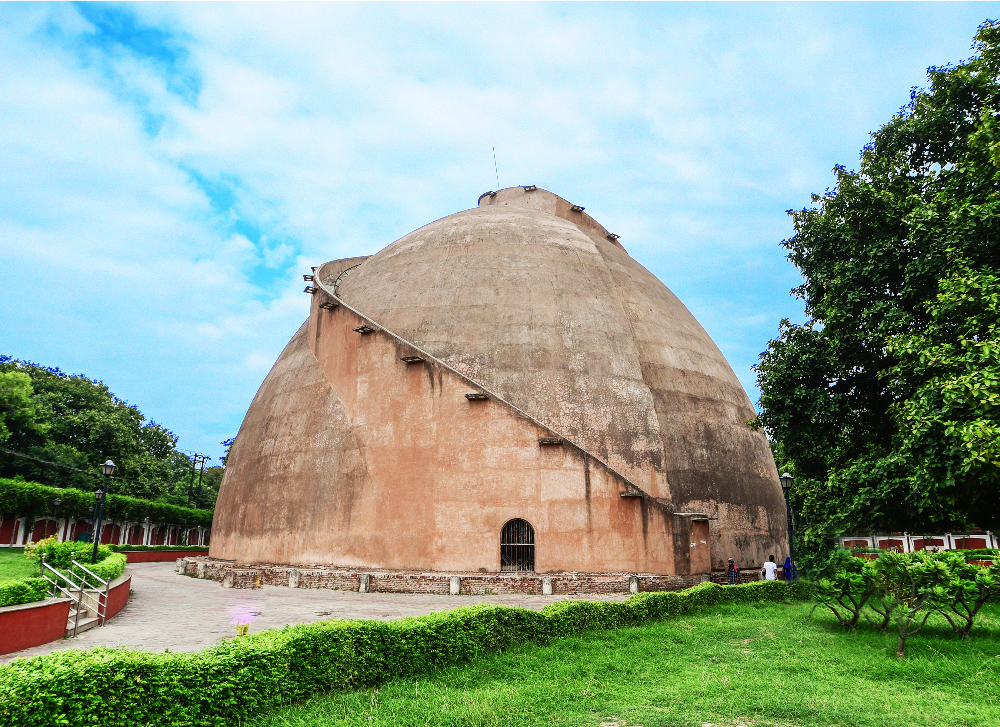
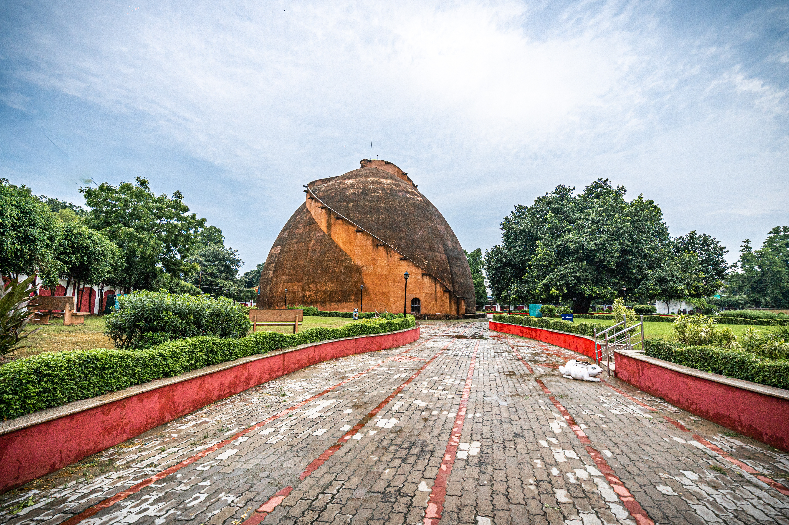
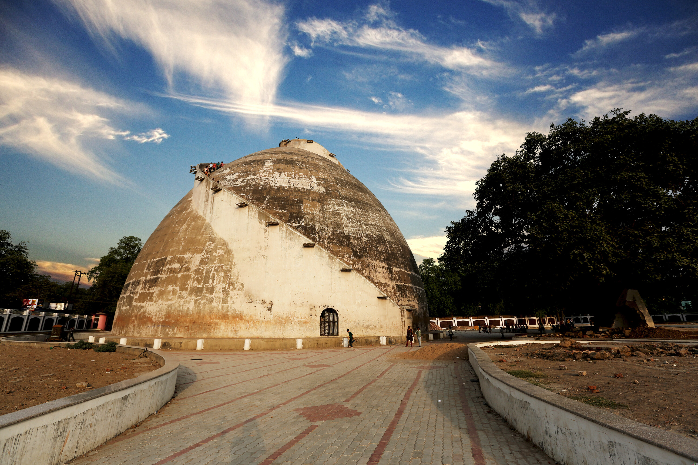
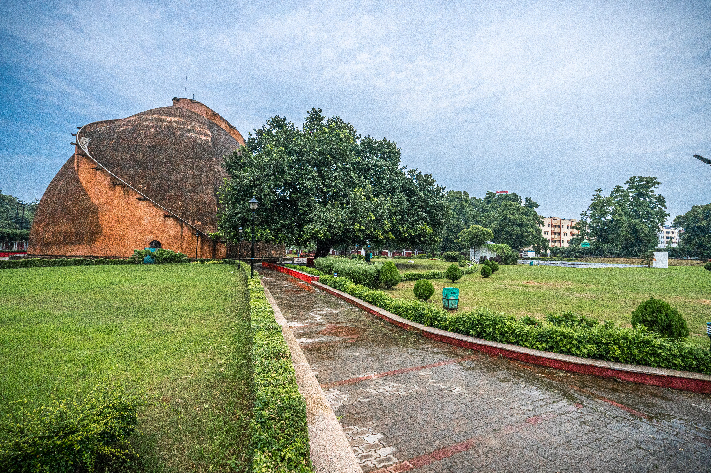

About Golghar
Golghar is a magnificent granary built in 1786. It offers a panoramic view of Patna city and the Ganges river. This iconic structure is one of Patna's most recognizable landmarks and a testament to the architectural prowess of the British era.
The name "Golghar" means "Round House" in Hindi, referring to its unique spherical shape. The structure was built by Captain John Garstin as a response to the devastating famine of 1770, with the intention of storing grains for future emergencies.
Historical Significance
Golghar was built following the Bengal famine of 1770, which claimed millions of lives. The British administration wanted to create a storage facility to prevent such tragedies in the future. However, due to design flaws, the granary was never used for its intended purpose.
Architecture
The beehive-shaped granary is about 29 metres high, with walls 3.6 metres thick at the base. A spiral stair of roughly 145 steps winds around the exterior to a viewing platform over the Ganga and the city.




Visitor Information
Golghar is open to visitors and offers a unique experience of climbing to the top for panoramic views. The structure is illuminated in the evenings, making it a beautiful sight. The best time to visit is during sunset when the views are spectacular.
← Back to Destinations